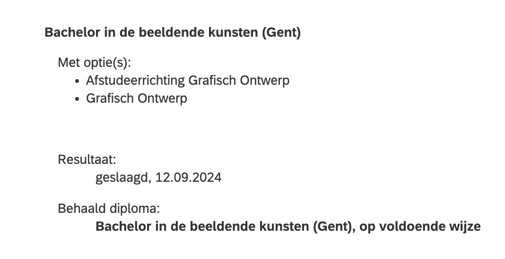

Het idee van tijd en ruimte heeft mensen altijd gefascineerd. Van de vroege mythologieën tot de moderne wetenschap, de menselijke nieuwsgierigheid heeft geleid tot tal van ontdekkingen en theorieën over de aard van het universum. In de oudheid dachten mensen dat de wereld plat was, omgeven door een eindeloze oceaan. Later, na de werk van astronomen zoals Ptolemaeus en Copernicus, werd het idee van een heliocentrisch universum geïntroduceerd, waarbij de aarde rond de zon draaide.
In de 20e eeuw bracht de relativiteitstheorie van Albert Einstein een paradigmaverschuiving. De traditionele opvattingen over ruimte en tijd werden vervangen door het concept van ruimte-tijd, een vierdimensionale constructie die de fundamentele basis vormt van de moderne fysica. Dit leidde tot revolutionaire inzichten in hoe zwaartekracht werkt en hoe het universum zich uitbreidt.
De wetenschap van de kosmologie heeft ons geholpen te begrijpen dat het universum zich sinds de oerknal ongeveer 13,8 miljard jaar geleden aan het uitbreiden is. De oerknal zelf wordt beschouwd als het moment waarop de ruimte-tijd zoals wij die kennen werd gecreëerd. Wetenschappers hebben ontdekt dat het universum niet alleen uitdijt, maar dat de snelheid van de uitdijing toeneemt, een bevinding die in de late 20e eeuw werd bevestigd door de waarneming van verre supernovae.
Toch zijn er nog steeds veel mysteries. De donkere materie en donkere energie die samen bijna 95% van het universum uitmaken, blijven ongrijpbaar. Deze onbekende krachten hebben invloed op de beweging van sterrenstelsels en de algehele structuur van het universum, maar we weten nog steeds niet precies wat ze zijn.
De zoektocht naar antwoorden op deze vragen heeft geleid tot enkele van de meest geavanceerde telescopen en ruimtevaartuigen die we ooit hebben gebouwd. Het Hubble Space Telescope heeft bijvoorbeeld diep in het universum gekeken en ons spectaculaire beelden van verre sterrenstelsels en de geboorte van nieuwe sterren gegeven. Daarnaast wordt er gewerkt aan de James Webb Space Telescope, die de Hubble zal aanvullen en mogelijk zelfs overtreffen in het verkrijgen van gedetailleerdere beelden en gegevens.
Naast de theoretische en astronomische ontdekkingen zijn er praktische toepassingen van de ruimtewetenschap die ons dagelijks leven beïnvloeden. Satellieten spelen een cruciale rol in communicatie, navigatie, weersvoorspelling en zelfs de studie van de aarde zelf. Dankzij ruimtevaarttechnologie kunnen we nauwkeurige kaarten maken, navigeren met GPS-systemen en zelfs proberen de effecten van klimaatverandering te begrijpen door het monitoren van de atmosfeer.
De verkenning van Mars is een ander belangrijk aspect van de ruimtewetenschap. Marsrovers zoals Curiosity en Perseverance hebben waardevolle gegevens verzameld over de geologie van de planeet, de aanwezigheid van water in het verleden en de mogelijkheid van menselijke bewoning in de toekomst. De plannen van NASA en private bedrijven zoals SpaceX richten zich nu op de verkenning van de rode planeet, met het ultieme doel om mensen naar Mars te sturen en daar een permanente basis te vestigen.
Het idee van interplanetair reizen roept vragen op over de toekomst van de mensheid. Als we erin slagen om de technologie te ontwikkelen om Mars of zelfs andere planeten te bereiken, zal dat niet alleen invloed hebben op ons begrip van het universum, maar ook op onze manier van leven op aarde. Hoe zullen we omgaan met de logistiek van het leven op andere planeten? Wat zijn de ethische implicaties van het verkennen van andere werelden?
Het universum is een ontzagwekkende en mysterieuze plaats. Ondanks onze vooruitgang in wetenschap en technologie, is er nog zoveel dat we niet weten. Maar met elke nieuwe ontdekking komen we dichter bij het ontrafelen van de geheimen die het universum in zich draagt. De reis van de menselijke nieuwsgierigheid is pas net begonnen, en de toekomst zal waarschijnlijk meer antwoorden brengen, samen met nieuwe vragen die wachten om beantwoord te worden.